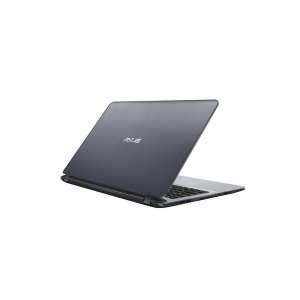
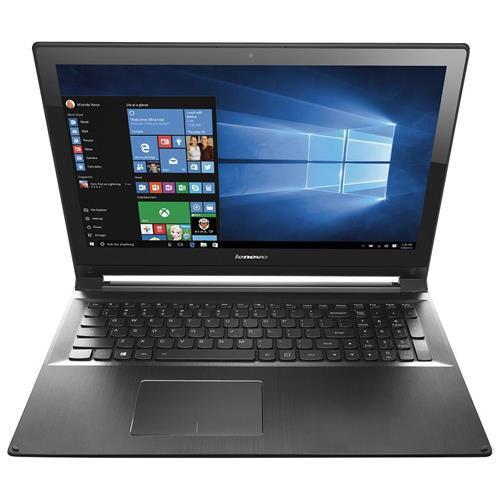
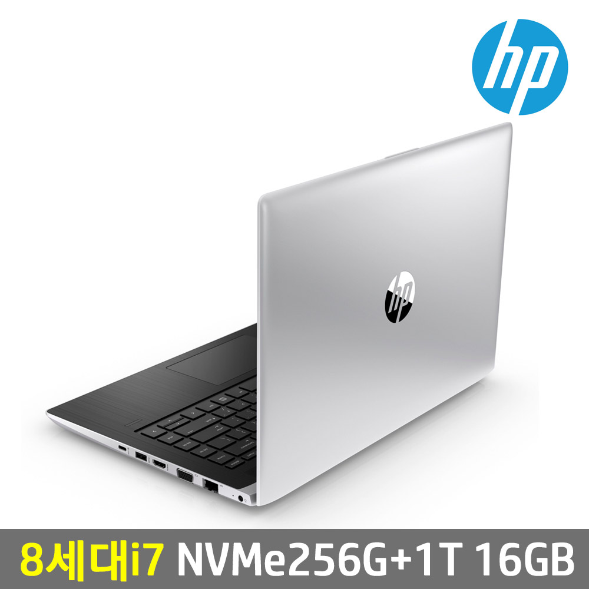
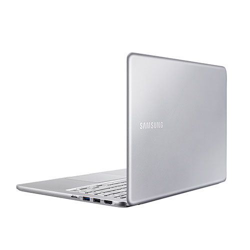

우선, 조사는 가격비교 사이트인 다나와 사이트에서 조사를 했다.
ASUS
930,000원
I7-8550U / 16GB / SSD 256GB(SATA3) + HDD 1TB / 1.68kg / FREEDOS / 15.6인치
ASUS
970,000원
I7-8550U / 16GB / SSD 256GB(SATA3) + HDD 1TB /1.55KG / FREEDOS / 14인치
레노버
1,060,000원
I5-8250U / 16GB / SSD 512GB(NVME) / 1.53KG / FREEDOS / 14인치
HP
1,370,000원
I7-8550U / 16GB / SSD 512GB(NVME) + HDD 1TB / 1.63kg / FREEDOS / 14인치
삼성
1,730,000원
I7-8550U / 16GB / SSD 512GB(NVME) / 1.29kg / FREEDOS / 15인치
삼성
1,870,000원
I7-8550U /16GB / SSD 512GB(NVME) / 1.25KG / WINDOW 10 / 15인치
ASUS

레노버

HP

삼성
